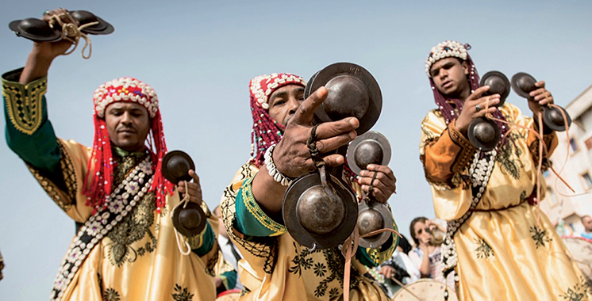
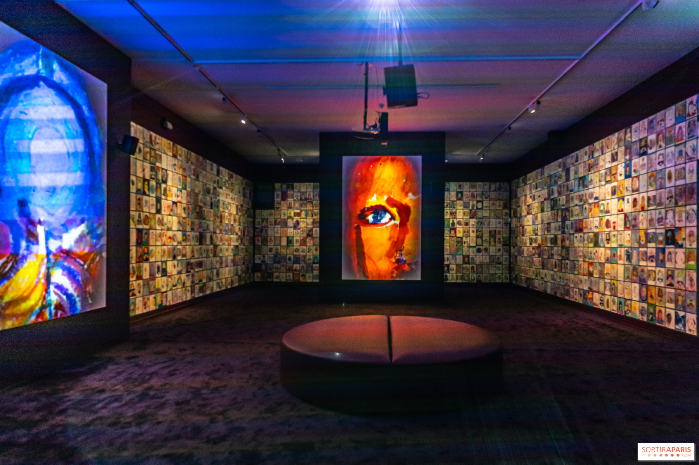
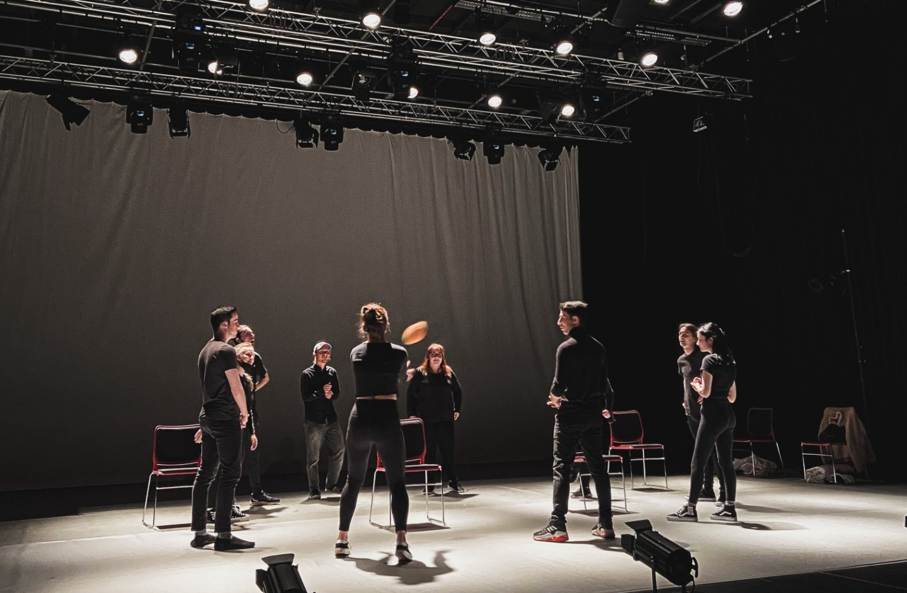
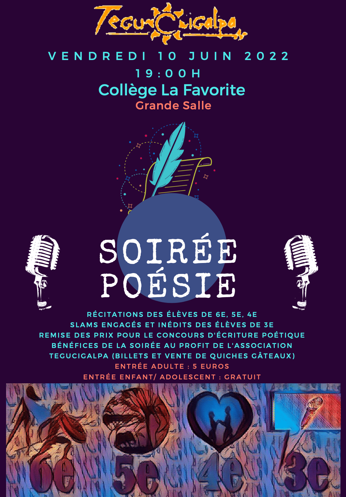

Galerie des moments forts
Retrouvez ici une sélection de photos capturées lors de nos événements passés. Chaque image témoigne de l'énergie, de la convivialité et de la richesse culturelle qui animent le Club Culturel El Medina. Laissez-vous inspirer et rejoignez-nous !




Vous souhaitez participer à nos prochains événements ? Devenez membre